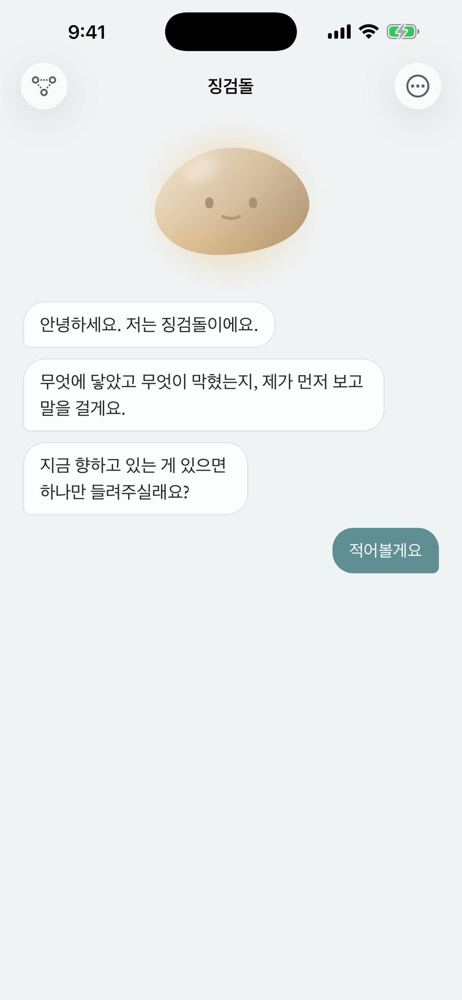
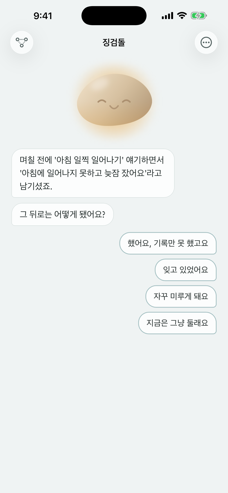
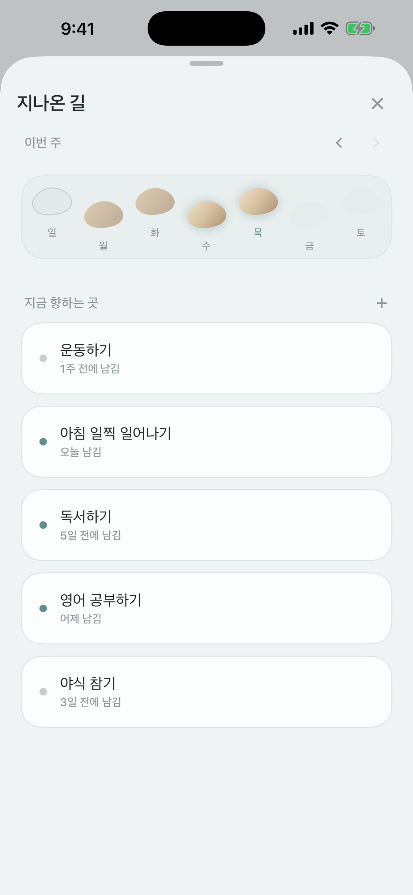
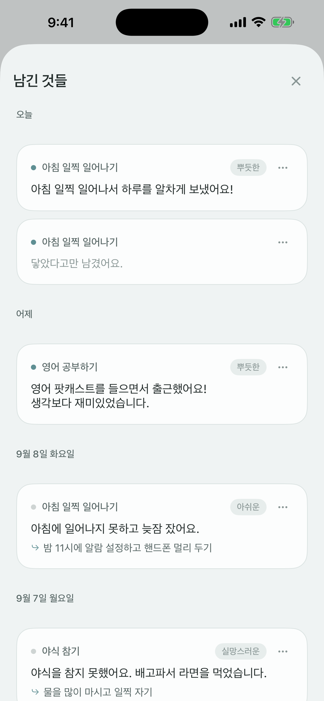

징검돌 ZinggumDol
헛디뎌도 개울에 빠진 건 아니에요.
계획대로 되지 않은 날을 조약돌과 이야기하며 돌아보는 기록 앱이에요.
이런 앱이에요
조약돌과 나누는 이야기
조약돌이 먼저 말을 걸어요. 지난번에 남긴 이야기를 기억했다가 그 뒤로 어땠는지 묻고, 답은 고르거나 직접 쓰면 돼요.
말로 편하게
쓰기 어려운 날엔 말로 남겨요. 음성 인식은 기기 안에서 이뤄지고, 지원하는 기기에서는 말한 내용을 읽기 쉽게 다듬어 줘요.
지나온 길
한 주가 징검다리로 놓여요. 밟지 않은 날의 돌도 지우지 않고 그대로 남겨 둬요.
남긴 것들
그날 있었던 일, 기분, 다음에 해볼 일을 날짜순으로 다시 볼 수 있어요.
위젯과 알림
홈 화면 위젯에서 조약돌의 한 마디를 보고, 정한 시간에 오늘 어땠는지 묻는 알림을 받을 수 있어요.
나만 보는 기록
회원가입이 없어요. 기록은 기기와 내 iCloud에만 있고, 비밀번호로 잠글 수 있어요.
화면




징검돌 프로
한 번 사면 계속 쓰는 상품이에요. 구독이 아닙니다. 목표를 3개보다 많이 품을 수 있고, 조약돌을 여섯 가지 결 중에서 고를 수 있고, 지나온 기록을 글 파일로 내보낼 수 있어요.
다른 기기에서 쓰거나 앱을 다시 설치했다면 설정 ▸ 구매 복원을 눌러 주세요.
문의
leeo@kakao.com
앱의 설정 ▸ 피드백 보내기로도 보낼 수 있어요.
개인정보
징검돌은 기록의 내용을 개발자에게 보내지 않아요. 자세한 내용은 개인정보처리방침을 확인해 주세요.